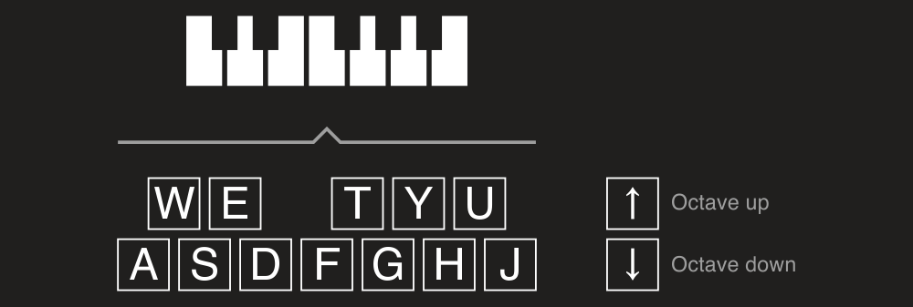

Input device
In DryWetMIDI an input MIDI device is represented by IInputDevice interface. It allows to receive events from a MIDI device. To understand what an input MIDI device is in DryWetMIDI, please read Overview article.
The library provides built-in implementation of IInputDevice: InputDevice class. To get an instance of InputDevice you can use either GetByName or GetById static methods. ID of a MIDI device is a number from 0 to devices count minus one. To get count of input MIDI devices presented in the system there is the GetDevicesCount method. You can get all input MIDI devices with GetAll method.
Important
You can use InputDevice built-in implementation of IInputDevice on Windows only. Of course you can create your own implementation of IInputDevice as described in Custom input device section below.
After an instance of InputDevice is obtained, call StartEventsListening to start listening incoming MIDI events going from an input MIDI device. If you don't need to listen for events anymore, call StopEventsListening. Also this method will be called automatically on Dispose. To check whether InputDevice is currently listening for events or not use IsListeningForEvents property.
If an input device is listening for events, it will fire EventReceived event for each incoming MIDI event. Received MIDI event will be passed to event's handler.
Small example (console app) that shows receiving MIDI data:
using System;
using Melanchall.DryWetMidi.Devices;
namespace InputDeviceExample
{
class Program
{
private static IInputDevice _inputDevice;
static void Main(string[] args)
{
_inputDevice = InputDevice.GetByName("Some MIDI device");
_inputDevice.EventReceived += OnEventReceived;
_inputDevice.StartEventsListening();
Console.WriteLine("Input device is listening for events. Press any key to exit...");
Console.ReadKey();
(_inputDevice as IDisposable)?.Dispose();
}
private static void OnEventReceived(object sender, MidiEventReceivedEventArgs e)
{
var midiDevice = (MidiDevice)sender;
Console.WriteLine($"Event received from '{midiDevice.Name}' at {DateTime.Now}: {e.Event}");
}
}
}
Important
You should always take care about disposing an InputDevice, so use it inside using block or call Dispose manually. Without it all resources taken by the device will live until GC collect them via finalizer of the InputDevice. It means that sometimes you will not be able to use different instances of the same device across multiple applications or different pieces of a program.
InputDevice has MidiTimeCodeReceived event which, by default, will be fired only when all MIDI Time Code components (separate MidiTimeCodeEvent events) are received forming hours:minutes:seconds:frames timestamp. You can turn this behavior off by setting RaiseMidiTimeCodeReceived to false.
If an invalid channel, system common or system real-time event received, InvalidShortEventReceived event will be fired holding the bytes that form the invalid event. If invalid system exclusive event received, InvalidSysExEventReceived event will be fired holding sysex data.
Custom input device
You can create your own input device implementation and use it in your app. For example, let's create device that will listen for specific keyboard keys and report corresponding note via EventReceived event. Also we will control current octave with up arrow and down arrow increasing or decreasing octave number correspondingly. Following image shows the scheme of our device:

Now we implement it:
public sealed class KeyboardInputDevice : IInputDevice
{
public event EventHandler<MidiEventReceivedEventArgs> EventReceived;
private static readonly Dictionary<ConsoleKey, NoteName> NotesNames = new Dictionary<ConsoleKey, NoteName>
{
[ConsoleKey.A] = NoteName.C,
[ConsoleKey.W] = NoteName.CSharp,
[ConsoleKey.S] = NoteName.D,
[ConsoleKey.E] = NoteName.DSharp,
[ConsoleKey.D] = NoteName.E,
[ConsoleKey.F] = NoteName.F,
[ConsoleKey.T] = NoteName.FSharp,
[ConsoleKey.G] = NoteName.G,
[ConsoleKey.Y] = NoteName.GSharp,
[ConsoleKey.H] = NoteName.A,
[ConsoleKey.U] = NoteName.ASharp,
[ConsoleKey.J] = NoteName.B
};
private readonly Thread _thread;
private int _octaveNumber = 4;
private SevenBitNumber? _currentNoteNumber;
public KeyboardInputDevice()
{
_thread = new Thread(ListenEvents);
}
public bool IsListeningForEvents { get; private set; }
public void StartEventsListening()
{
_thread.Start();
IsListeningForEvents = true;
}
public void StopEventsListening()
{
if (_currentNoteNumber != null)
EventReceived?.Invoke(this, new MidiEventReceivedEventArgs(
new NoteOffEvent(_currentNoteNumber.Value, SevenBitNumber.MinValue)));
IsListeningForEvents = false;
}
private void ListenEvents()
{
while (IsListeningForEvents)
{
var key = Console.ReadKey(true);
if (!NotesNames.TryGetValue(key.Key, out var noteName))
{
switch (key.Key)
{
case ConsoleKey.UpArrow:
_octaveNumber++;
Console.WriteLine($"Octave is {_octaveNumber} now");
break;
case ConsoleKey.DownArrow:
_octaveNumber--;
Console.WriteLine($"Octave is {_octaveNumber} now");
break;
case ConsoleKey.Escape:
StopEventsListening();
Console.WriteLine("Listening stopped.");
break;
}
continue;
}
var noteNumber = CalculateNoteNumber(noteName, _octaveNumber);
if (!IsNoteNumberValid(noteNumber))
continue;
if (_currentNoteNumber != null)
EventReceived?.Invoke(this, new MidiEventReceivedEventArgs(
new NoteOffEvent(_currentNoteNumber.Value, SevenBitNumber.MinValue)));
EventReceived?.Invoke(this, new MidiEventReceivedEventArgs(
new NoteOnEvent((SevenBitNumber)noteNumber, SevenBitNumber.MaxValue)));
_currentNoteNumber = (SevenBitNumber)noteNumber;
}
}
private static bool IsNoteNumberValid(int noteNumber)
{
return noteNumber >= SevenBitNumber.MinValue && noteNumber <= SevenBitNumber.MaxValue;
}
private static int CalculateNoteNumber(NoteName noteName, int octave)
{
return (octave + 1) * Octave.OctaveSize + (int)noteName;
}
}
We can then use it for Recording or redirecting received notes to real output device to make them sound:
var outputDevice = OutputDevice.GetByName("Microsoft GS Wavetable Synth");
var devicesConnector = keyboardInputDevice.Connect(outputDevice);